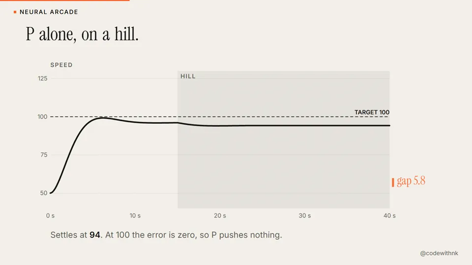

Three looks at one number
Every PID controller watches a single number, the error: how far you are from where you want to be. It then asks three questions about it and adds up the answers.
P
How big is it now?
Push in proportion to the error. Far away, push hard; close, push gently. On its own it overshoots and swings, and against a steady pull like gravity it settles a little short.

I
How long has it lasted?
Keep a running total of the error. A small error that never goes away grows into a big push, which is what finally closes the last gap. Too much memory, though, and it keeps pushing after it arrives.

D
How fast is it changing?
Look at how quickly the error shrinks. Rushing towards the target? Ease off early, so you arrive without overshooting.